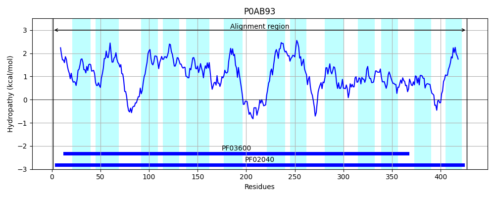
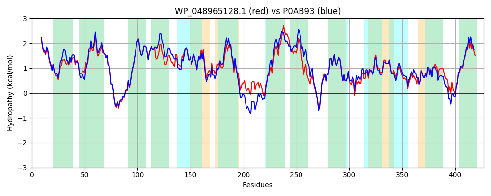

Hit Accession: P0AB93
Hit TCID: 3.A.4.1.1
Hit Description: gnl|BL_ORD_ID|8693 gnl|TC-DB|P0AB93|3.A.4.1.1 Arsenical pump membrane protein - Escherichia coli.
Mach Len: 427
e:0.000000
Query TMS Count : 12
Hit TMS Count: 13
TMS-Overlap Score: 11.200000
Predicted Substrates:CHEBI:75861;arsenopyrite
BLAST Alignment:
Score: 1851 , Bit scores: 717 bits, E-value: 0.0e+00, Alignment length: 427, Percentage identity: 86
Query: 1 MLLAGAIFVLTLVLVIWQPRGLGIGWSAAFGAALALATGGVQLADIPVVWHIVWNATATFIAVIIISLLLDESGFFEWAALHVSRWGRGRGRLLFTWIILLGAAVAALFANDGAALILTPIVIAMLRALGFSKGTMLAFVMAAGFIADTASLPLVVSNLVNIVSADFFAIGFREYASVMVTVDLAAILTTLAMLHLFFRRDIPPAWDMALLKAPVTAIKDPATFRTGWGVLLLLLVGFFVLDPLGILVSAIAAPGAGILFAVAKRGRVINTGKVLRGAPWQIVIFSLGMYLVVYGLRNAGLTDYLTTVLNMLAERGLWAATLGTGILSAFLSSIMNNMPSVLVGALSIDGSAATGTIKEAMIYANVIGCDLGPKITPIGSLATLLWLHVLAQKHITIGWGYYFRCGITMTLPVLLVTLAALALRLSF 427
MLLAGAIFVLT+VLVIWQP+GLGIGWSA GA LAL TG V DIPVVW+IVWNATA FIAVIIISLLLDESGFFEWAALHVSRWG GRGRLLFTWI+LLGAAVAALFANDGAALILTPIVIAML ALGFSKGT LAFVMAAGFIADTASLPL+VSNLVNIVSADFF +GFREYASVMV VD+AAI+ TL MLHL+FR+DIP +DMALLK+P AIKDPATF+TGW VLLLLLVGFFVL+PLGI VSAIAA GA ILF VAKRG INTGKVLRGAPWQIVIFSLGMYLVVYGLRNAGLT+YL+ VLN+LA+ GLWAATLGTG L+AFLSSIMNNMP+VLVGALSIDGS A+G IKEAM+YANVIGCDLGPKITPIGSLATLLWLHVL+QK++TI WGYYFR GI MTLPVL VTLAALALRLSF
Sbjct: 1 MLLAGAIFVLTIVLVIWQPKGLGIGWSATLGAVLALVTGVVHPGDIPVVWNIVWNATAAFIAVIIISLLLDESGFFEWAALHVSRWGNGRGRLLFTWIVLLGAAVAALFANDGAALILTPIVIAMLLALGFSKGTTLAFVMAAGFIADTASLPLIVSNLVNIVSADFFGLGFREYASVMVPVDIAAIVATLVMLHLYFRKDIPQNYDMALLKSPAEAIKDPATFKTGWVVLLLLLVGFFVLEPLGIPVSAIAAVGALILFVVAKRGHAINTGKVLRGAPWQIVIFSLGMYLVVYGLRNAGLTEYLSGVLNVLADNGLWAATLGTGFLTAFLSSIMNNMPTVLVGALSIDGSTASGVIKEAMVYANVIGCDLGPKITPIGSLATLLWLHVLSQKNMTISWGYYFRTGIIMTLPVLFVTLAALALRLSF 427 | Protein Hydropathy Plots: |
|---|
 |  |
Pairwise Alignment-Hydropathy Plot:
|
|---|
|  |